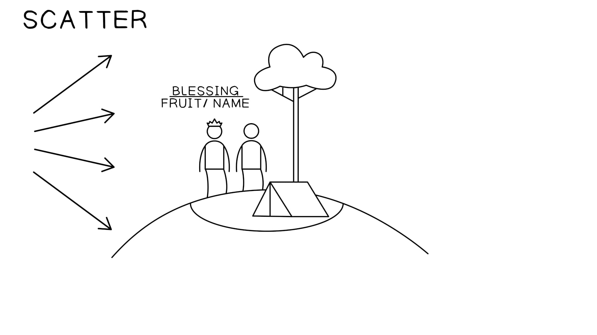
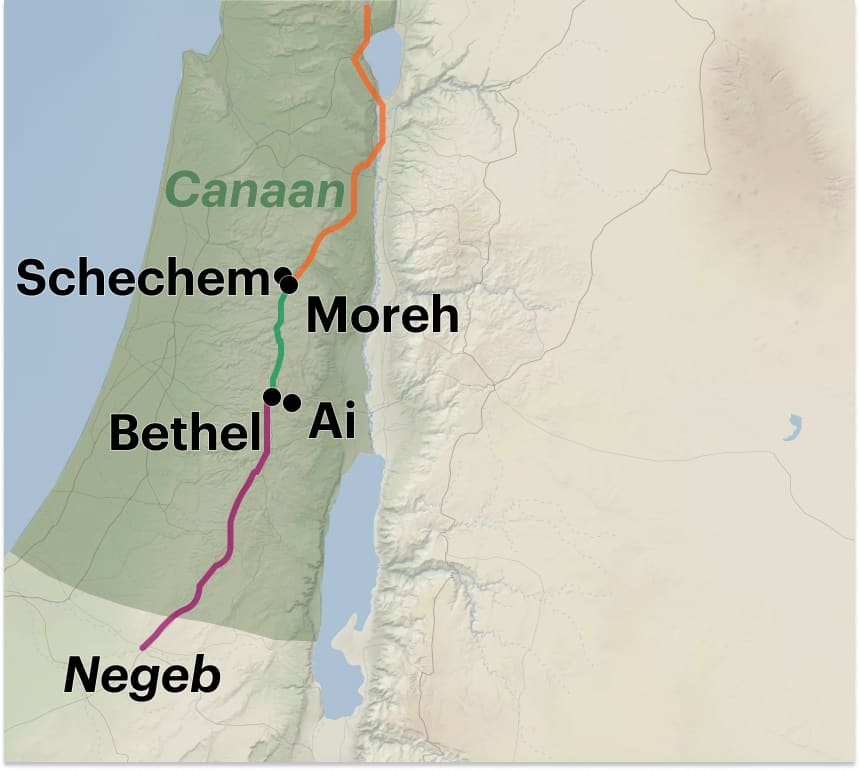

A - A primeira palavra de Yahweh a Avram: Bênção e descendência A - A primeira palavra de Yahweh a Avram: Bênção e descendência
B - A resposta de Avram: Viagem para CanaãB - A resposta de Avram: Viagem para Canaã
A' - A segunda palavra de Yahweh a Avram: Promessa de terra para a descendênciaA' - A segunda palavra de Yahweh a Avram: Promessa de terra para a descendência
B' - A resposta de Avram: Construir um altar e viajar para o NegueveB' - A resposta de Avram: Construir um altar e viajar para o Negueve
Gênesis 12:1-9. Tradução e Design Literário por Tim Mackie para BibleProject Classroom: Abraham (2021).Gênesis 12:1-9. Tradução e Design Literário por Tim Mackie para BibleProject Classroom: Abraham (2021).
A sequência narrativa de dois chamados e promessas divinas, cada um seguido pela obediência de Avram, cria um padrão claro para o leitor. Quando o escolhido de Deus segue o comando divino apesar de muitas incógnitas, há uma bênção apenas esperando para ser descoberta.A sequência narrativa de dois chamados e promessas divinas, cada um seguido pela obediência de Avram, cria um padrão claro para o leitor. Quando o escolhido de Deus segue o comando divino apesar de muitas incógnitas, há uma bênção apenas esperando para ser descoberta.
12:112:1 E Yahweh disse a Avram, E Yahweh disse a Avram,
a. "Saiaa. "Saia
b. da b. da sua terrasua terra, ,
b'. e da b'. e da sua famíliasua família, ,
b'. e da b'. e da casa de seu paicasa de seu pai, ,
a'. para a terra que eu lhe mostrarei.a'. para a terra que eu lhe mostrarei.
a. a. 22 E E eu farei de você uma grande naçãoeu farei de você uma grande nação, ,
b. e eu o abençoarei,b. e eu o abençoarei,
a'. e farei grande o seu nome;a'. e farei grande o seu nome;
b'. e assim você será uma bênção.b'. e assim você será uma bênção.
a. a. 33 E eu E eu abençoareiabençoarei
b. aqueles que o b. aqueles que o abençoaremabençoarem,,
b'. e aquele que o trata como b'. e aquele que o trata como amaldiçoadoamaldiçoado
a'. eu a'. eu amaldiçoareiamaldiçoarei; ;
a. e em você todas as a. e em você todas as famílias da terrafamílias da terra
b. encontrarão bênção.”b. encontrarão bênção.”
Gênesis 11:27-12:5. Tradução e Design Literário por Tim Mackie para BibleProject Classroom: Noah to Abraham (2020).Gênesis 11:27-12:5. Tradução e Design Literário por Tim Mackie para BibleProject Classroom: Noah to Abraham (2020).
A frase hebraica para “vá em frente” (לך לך) em A frase hebraica para “vá em frente” (לך לך) em 12:112:1 é única, e é repetida novamente apenas no clímax dos 10 testes de Avram em é única, e é repetida novamente apenas no clímax dos 10 testes de Avram em 22:222:2. .
Gênesis 12:1Gênesis 12:1 Tradução do Instrutor Tradução do Instrutor
vai-te da sua terra... para a terra que eu lhe mostrarei. vai-te da sua terra... para a terra que eu lhe mostrarei.
Gênesis 22:2Gênesis 22:2 Tradução do Instrutor Tradução do Instrutor
vai-te para a terra de Moriá, e ofereça [Yitskhaq] ali como oferta queimada em um dos montes que eu lhe direi.vai-te para a terra de Moriá, e ofereça [Yitskhaq] ali como oferta queimada em um dos montes que eu lhe direi.
Avram se separa de sua família e vai para um novo lugar onde Deus criará uma nova família. Esta é uma repetição do padrão do Éden, onde Deus dividiu o único humano em dois humanos para criar a primeira família escolhida. De acordo com Gênesis 2, somente Deus pode fornecer a "ajuda" (עזר) necessária que pode livrar seu escolhido do desamparo. Avram se separa de sua família e vai para um novo lugar onde Deus criará uma nova família. Esta é uma repetição do padrão do Éden, onde Deus dividiu o único humano em dois humanos para criar a primeira família escolhida. De acordo com Gênesis 2, somente Deus pode fornecer a "ajuda" (עזר) necessária que pode livrar seu escolhido do desamparo.
Gênesis 2:18Gênesis 2:18 Tradução do Instrutor Tradução do Instrutor
Não é bom que o homem esteja só. Farei para ele uma fonte de ajuda libertadora (עזר) que lhe corresponda. Não é bom que o homem esteja só. Farei para ele uma fonte de ajuda libertadora (עזר) que lhe corresponda.
Gênesis 2:24Gênesis 2:24 Tradução do Instrutor Tradução do Instrutor
Por esta razão, um homem deixará seu pai e sua mãe, e se unirá à sua esposa, e os dois se tornarão uma só carne. Por esta razão, um homem deixará seu pai e sua mãe, e se unirá à sua esposa, e os dois se tornarão uma só carne.
Gênesis 12:1Gênesis 12:1 Tradução do Instrutor Tradução do Instrutor
Vá em frente... da sua terra, da sua família de nascimento e da casa de seu pai... Vá em frente... da sua terra, da sua família de nascimento e da casa de seu pai...
Gênesis 12:7Gênesis 12:7 Tradução do Instrutor Tradução do Instrutor
À sua semente (זרע) darei esta terra. À sua semente (זרע) darei esta terra.
Em ambas as narrativas, a promessa de Deus é fornecer o que os humanos não podem prover por si mesmos. Em Gênesis 2, é a “ajuda libertadora” (‘ezer, עזר) sem a qual o humano não pode florescer no Éden, e em Gênesis 12, é a “semente” (zera‘, זרע) sem a qual a família de Avram não pode se tornar uma bênção para as nações.Em ambas as narrativas, a promessa de Deus é fornecer o que os humanos não podem prover por si mesmos. Em Gênesis 2, é a “ajuda libertadora” (‘ezer, עזר) sem a qual o humano não pode florescer no Éden, e em Gênesis 12, é a “semente” (zera‘, זרע) sem a qual a família de Avram não pode se tornar uma bênção para as nações.
Gênesis 12:2Gênesis 12:2 Tradução do Instrutor Tradução do Instrutor
E eu farei de você uma grande nação, e o abençoarei, E eu farei de você uma grande nação, e o abençoarei,
e farei grande o seu nome; e assim você será uma bênção. e farei grande o seu nome; e assim você será uma bênção.
As duas linhas poéticas paralelas contêm duas promessas de grandeza e duas promessas de bênção.As duas linhas poéticas paralelas contêm duas promessas de grandeza e duas promessas de bênção.
Este primeiro par de linhas destaca o que Deus fará por Avram (torná-lo grande e abençoá-lo), enquanto o segundo item destaca o que Avram se tornará em relação aos outros.Este primeiro par de linhas destaca o que Deus fará por Avram (torná-lo grande e abençoá-lo), enquanto o segundo item destaca o que Avram se tornará em relação aos outros.
Essas linhas poéticas criam uma vocação para Avram. Ele está sendo convocado para uma nova terra semelhante ao Éden, onde Deus o transformará em uma nova família escolhida, onde ele poderá se tornar um canal de bênção divina para os outros. Essa vocação é o foco das linhas finais do poema.Essas linhas poéticas criam uma vocação para Avram. Ele está sendo convocado para uma nova terra semelhante ao Éden, onde Deus o transformará em uma nova família escolhida, onde ele poderá se tornar um canal de bênção divina para os outros. Essa vocação é o foco das linhas finais do poema.
Gênesis 12:3Gênesis 12:3 Tradução do Instrutor Tradução do Instrutor
E eu abençoarei E eu abençoarei
aqueles que te abençoarem, aqueles que te abençoarem,
e aquele que te trata como amaldiçoado e aquele que te trata como amaldiçoado
eu amaldiçoarei; eu amaldiçoarei;
e em você todas as famílias da terra e em você todas as famílias da terra
encontrarão bênção.” encontrarão bênção.”
Aqui, Deus marca Avram como seu escolhido e se compromete a protegê-lo da morte. A promessa vem em duas partes.Aqui, Deus marca Avram como seu escolhido e se compromete a protegê-lo da morte. A promessa vem em duas partes.
A promessa divina de bênção corresponde à bênção divina primeiramente dada à humanidade e depois a Noé após o dilúvio.A promessa divina de bênção corresponde à bênção divina primeiramente dada à humanidade e depois a Noé após o dilúvio.
Gênesis 1:27-28Gênesis 1:27-28 Tradução do Instrutor Tradução do Instrutor
2727Elohim criou a humanidade à sua imagem, à imagem de Elohim ele o criou; macho e fêmea os criou. Elohim criou a humanidade à sua imagem, à imagem de Elohim ele o criou; macho e fêmea os criou. 2828E Elohim os abençoou; e Elohim lhes disse: “Sede fecundos e multiplicai-vos, e enchei a terra, e subjugai-a; e dominai sobre os peixes do mar e sobre as aves do céu e sobre todo ser vivente que se move sobre a terra.” E Elohim os abençoou; e Elohim lhes disse: “Sede fecundos e multiplicai-vos, e enchei a terra, e subjugai-a; e dominai sobre os peixes do mar e sobre as aves do céu e sobre todo ser vivente que se move sobre a terra.”
Gênesis 9:1-2Gênesis 9:1-2 Tradução do Instrutor Tradução do Instrutor
11E Elohim abençoou Noé e seus filhos e disse-lhes: “Sede fecundos e multiplicai-vos, e enchei a terra. E Elohim abençoou Noé e seus filhos e disse-lhes: “Sede fecundos e multiplicai-vos, e enchei a terra. 22O temor de vós e o terror de vós estarão sobre todo animal da terra e sobre toda ave do céu; com tudo o que rasteja sobre o solo, e com todos os peixes do mar, em vossas mãos são entregues.” O temor de vós e o terror de vós estarão sobre todo animal da terra e sobre toda ave do céu; com tudo o que rasteja sobre o solo, e com todos os peixes do mar, em vossas mãos são entregues.”
Gênesis 12:2-3Gênesis 12:2-3 Tradução do Instrutor Tradução do Instrutor
22e eu farei de você uma grande nação, e eu o abençoarei, e farei grande o seu nome; e assim você será uma bênção; e eu farei de você uma grande nação, e eu o abençoarei, e farei grande o seu nome; e assim você será uma bênção; 33e eu abençoarei os que te abençoarem, e aquele que te amaldiçoar eu amaldiçoarei; e em ti todas as famílias-clãs da terra encontrarão bênção. e eu abençoarei os que te abençoarem, e aquele que te amaldiçoar eu amaldiçoarei; e em ti todas as famílias-clãs da terra encontrarão bênção.
O poema de bênção em 12:2-3 tem cinco bênçãos que correspondem curiosamente às cinco maldições em Gênesis 3-11, e tem sete linhas poéticas que correspondem às bênçãos posteriores dadas aos patriarcas, que também consistem em sete partes.O poema de bênção em 12:2-3 tem cinco bênçãos que correspondem curiosamente às cinco maldições em Gênesis 3-11, e tem sete linhas poéticas que correspondem às bênçãos posteriores dadas aos patriarcas, que também consistem em sete partes.
Toda a Bíblia pode ser vista como uma longa resposta a uma pergunta muito simples: O que Deus pode fazer a respeito do pecado e da rebelião da raça humana? Gênesis 12 a Apocalipse 22 constituem a resposta de Deus ao problema apresentado pelas narrativas sombrias de Gênesis 3–11. Em outras palavras, Gênesis 3–11 expõe o problema que a missão de Deus passa a enfrentar a partir de Gênesis 12. Gênesis 1–11 apresenta um problema de proporções cósmicas, ao qual Deus precisa dar uma resposta igualmente cósmica. Os problemas descritos de forma tão vívida em Gênesis 1–11 não serão resolvidos apenas encontrando um modo de levar os seres humanos ao céu quando morrem. O amor e o poder do Criador precisam lidar não só com o pecado individual, mas também com a discórdia e a hostilidade entre as nações; não apenas com as necessidades humanas, mas também com o sofrimento dos animais e a maldição sobre a terra. O chamado de Abrão marca o início da resposta de Deus ao mal dos corações humanos, à rivalidade entre as nações e à dor da criação inteira.” Toda a Bíblia pode ser vista como uma longa resposta a uma pergunta muito simples: O que Deus pode fazer a respeito do pecado e da rebelião da raça humana? Gênesis 12 a Apocalipse 22 constituem a resposta de Deus ao problema apresentado pelas narrativas sombrias de Gênesis 3–11. Em outras palavras, Gênesis 3–11 expõe o problema que a missão de Deus passa a enfrentar a partir de Gênesis 12. Gênesis 1–11 apresenta um problema de proporções cósmicas, ao qual Deus precisa dar uma resposta igualmente cósmica. Os problemas descritos de forma tão vívida em Gênesis 1–11 não serão resolvidos apenas encontrando um modo de levar os seres humanos ao céu quando morrem. O amor e o poder do Criador precisam lidar não só com o pecado individual, mas também com a discórdia e a hostilidade entre as nações; não apenas com as necessidades humanas, mas também com o sofrimento dos animais e a maldição sobre a terra. O chamado de Abrão marca o início da resposta de Deus ao mal dos corações humanos, à rivalidade entre as nações e à dor da criação inteira.”
Wright, Christopher (2006). The Mission of God: Unlocking the Bible's Grand Narrative. IVP Academic. 195.Wright, Christopher (2006). The Mission of God: Unlocking the Bible's Grand Narrative. IVP Academic. 195.
Gênesis 27:28-29Gênesis 27:28-29
A jornada de Avram para Canaã é, na verdade, a conclusão do que seu pai Terá deixou por fazer em A jornada de Avram para Canaã é, na verdade, a conclusão do que seu pai Terá deixou por fazer em 11:3111:31. As ações de Avram são claramente contrastadas com as de seu pai.. As ações de Avram são claramente contrastadas com as de seu pai.
Gênesis 11:31Gênesis 11:31 NVI NVI
Terá tomou seu filho Abrão, seu neto Ló, filho de Harã, e sua nora Sarai, mulher de seu filho Abrão, e juntos partiram de Ur dos caldeus para ir para Canaã. Mas, ao chegarem em Harã, ali se estabeleceram. Terá tomou seu filho Abrão, seu neto Ló, filho de Harã, e sua nora Sarai, mulher de seu filho Abrão, e juntos partiram de Ur dos caldeus para ir para Canaã. Mas, ao chegarem em Harã, ali se estabeleceram.
Gênesis 12:5Gênesis 12:5 NVI NVI
Abrão levou sua mulher Sarai, seu sobrinho Ló, todos os bens que haviam acumulado e as pessoas que haviam adquirido em Harã, e partiram para a terra de Canaã; e chegaram à terra de Canaã. Abrão levou sua mulher Sarai, seu sobrinho Ló, todos os bens que haviam acumulado e as pessoas que haviam adquirido em Harã, e partiram para a terra de Canaã; e chegaram à terra de Canaã.
a a 66 E Avram atravessou (ויעבר)E Avram atravessou (ויעבר) a terraa terra
b b até o até o lugar de Siquémlugar de Siquém
b' b' até oaté o carvalho de Moré, carvalho de Moré,
a' e os cananitas estava então a' e os cananitas estava então na terrana terra..
a a 77 E E Yahweh apareceu a AvramYahweh apareceu a Avram e ele disse, e ele disse,
b "À tua semente darei esta terra."b "À tua semente darei esta terra."
a' E ele a' E ele construiu ali um altar a Yahwehconstruiu ali um altar a Yahweh que que lhe apareceulhe apareceu..
a a 88 E ele seguiu em frente (ויעתק) E ele seguiu em frente (ויעתק) de lá de lá
b para a colina a b para a colina a leste de Betelleste de Betel,,
a' e armou sua tenda,a' e armou sua tenda,
b' b' BetelBetel a oeste a oeste
b'' e Ai a b'' e Ai a lesteleste;;
a e ele a e ele construiu ali um altar a Yahwehconstruiu ali um altar a Yahweh
a' e a' e invocou o nome de Yahwehinvocou o nome de Yahweh..
a a E Abraão partiu (וַיִּסַּע),E Abraão partiu (וַיִּסַּע),
a' continuando a a' continuando a sua jornada (נָסוֹעַ)sua jornada (נָסוֹעַ) em direção ao Neguebe. em direção ao Neguebe.
Gênesis 12:6-9. Tradução e Design Literário por Tim Mackie para BibleProject Classroom: Noah to Abraham (2020).Gênesis 12:6-9. Tradução e Design Literário por Tim Mackie para BibleProject Classroom: Noah to Abraham (2020).

Avram entra em Canaã pelo norte e passa pela região montanhosa que corre de norte a sul, com os vales costeiros e do rio Jordão em cada lado. Ele faz várias paradas muito interessantes ao longo do caminho. Avram entra em Canaã pelo norte e passa pela região montanhosa que corre de norte a sul, com os vales costeiros e do rio Jordão em cada lado. Ele faz várias paradas muito interessantes ao longo do caminho.
Avram é retratado fazendo três paradas, as duas primeiras perto de cidades no topo das colinas, centrais para a rede de estradas em Canaã. A narrativa destaca como ele Avram é retratado fazendo três paradas, as duas primeiras perto de cidades no topo das colinas, centrais para a rede de estradas em Canaã. A narrativa destaca como ele não entranão entra nas cidades povoadas pelos cananeus. Em vez disso, Avram acampa perto das cidades e constrói novos lugares de adoração para o nas cidades povoadas pelos cananeus. Em vez disso, Avram acampa perto das cidades e constrói novos lugares de adoração para o ElohimElohim que o chamou para esta terra. que o chamou para esta terra.
A narrativa destaca como “o cananeu estava na terra naquele tempo” para nos mostrar que Avram não está se integrando à cultura cananeia. Em vez disso, ele estabelece sua própria residência alternativa, com lugares de adoração únicos dedicados ao seu A narrative highlights how “the Canaanite was in the land at that time” to show us that Avram isn’t integrating into Canaanite culture. Instead, he sets up his own alternative residence with unique places of worship dedicated to his ElohimElohim. .
Desta forma, Avram é retratado em linhas paralelas a Abel e Sete, em contraste com Caim e Lameque.Desta forma, Avram é retratado em linhas paralelas a Abel e Sete, em contraste com Caim e Lameque.
| Filhos de Adão em Gênesis 4Filhos de Adão em Gênesis 4 | "Filhos" de Noé em Gênesis 12"Filhos" de Noé em Gênesis 12 |
|---|---|
| Gn. 4:2-4Gn. 4:2-4 Abel era um “pastor de ovelhas” e fazia ofertas a Yahweh de seu rebanho. Abel era um “pastor de ovelhas” e fazia ofertas a Yahweh de seu rebanho. | Gn. 12:5, 16Gn. 12:5, 16 Avram (da linhagem de Sem) lidera uma caravana de pastores migrantes com muitos rebanhos. Avram (da linhagem de Sem) lidera uma caravana de pastores migrantes com muitos rebanhos. |
| Gn. 4:26Gn. 4:26 Sete, a semente dada no lugar de Abel, tem seu primeiro filho, chamado Enos (= “humano”), quando “se começou a invocar o nome de Yahweh”. Sete, a semente dada no lugar de Abel, tem seu primeiro filho, chamado Enos (= “humano”), quando “se começou a invocar o nome de Yahweh”. | Gn. 12:6, 8Gn. 12:6, 8 Avram constrói altares em Canaã e “invoca o nome de Yahweh”. Avram constrói altares em Canaã e “invoca o nome de Yahweh”. |
| Caim era um lavrador ( Caim era um lavrador (Gn. 4:1-4Gn. 4:1-4), que, após assassinar Abel, o pastor, passou a construir a primeira cidade na Bíblia e a nomeou em homenagem a seu primeiro filho, Enoque (= “dedicado”, ), que, após assassinar Abel, o pastor, passou a construir a primeira cidade na Bíblia e a nomeou em homenagem a seu primeiro filho, Enoque (= “dedicado”, Gn. 4:17Gn. 4:17). ). | Gn. 12:6Gn. 12:6 Os cananeus (da linhagem de Cam), em contraste com Avram, vivem nas cidades. Os cananeus (da linhagem de Cam), em contraste com Avram, vivem nas cidades. |
Filhos de Adão e Filhos de Noé. Criado por Tim Mackie para BibleProject Classroom: Abraham (2021).Filhos de Adão e Filhos de Noé. Criado por Tim Mackie para BibleProject Classroom: Abraham (2021).
Abrão torna-se a nova humanidade, descendente da linhagem dos que adoram Yahweh, escolhidos e separados de seus parentes urbanos que adoram coisas feitas por mãos humanas — deuses ou cidades. Abrão será aquele que restabelecerá a adoração ao Deus Criador, e ele começa fazendo isso ao marcar a região montanhosa central como território de Yahweh. Abrão torna-se a nova humanidade, descendente da linhagem dos que adoram Yahweh, escolhidos e separados de seus parentes urbanos que adoram coisas feitas por mãos humanas — deuses ou cidades. Abrão será aquele que restabelecerá a adoração ao Deus Criador, e ele começa fazendo isso ao marcar a região montanhosa central como território de Yahweh.
A jornada de três paradas de Avram pela terra prometida inicia um padrão que é posteriormente espelhado por seu neto Jacó em A jornada de três paradas de Avram pela terra prometida inicia um padrão que é posteriormente espelhado por seu neto Jacó em Gênesis 33-35Gênesis 33-35, e mais uma vez por Josué e os israelitas (, e mais uma vez por Josué e os israelitas (Josué 7-8Josué 7-8). ).
| AvramAvram | JacóJacó | Josué (Após a Parada #1: Jericó)Josué (Após a Parada #1: Jericó) |
|---|---|---|
|
Parada
#1: SiquémParada
#1: Siquém Gênesis 12:6-7Gênesis 12:6-7 E E Avram passou pela terra até o lugar de SiquémAvram passou pela terra até o lugar de Siquém, até o Terebinto de Moré... E construiu ali um altar a Yahweh que lhe aparecera. , até o Terebinto de Moré... E construiu ali um altar a Yahweh que lhe aparecera. |
Parada
#1: SiquémParada
#1: Siquém Gênesis 33:18, 20Gênesis 33:18, 20 E E Jacó chegou a salvo à cidade de SiquémJacó chegou a salvo à cidade de Siquém, que está na terra de Canaã, quando voltou de Padã-Arã, e acampou diante da cidade... E erigiu ali um altar, e chamou-lhe "El, o Deus de Israel". , que está na terra de Canaã, quando voltou de Padã-Arã, e acampou diante da cidade... E erigiu ali um altar, e chamou-lhe "El, o Deus de Israel". |
Parada
#3: SiquémParada
#3: Siquém Josué 8:30Josué 8:30 Então Josué edificou um altar ao Senhor, o Deus de Israel, no monte Ebal [que fica fora de Siquém, veja Deut. 11:29-30]. Então Josué edificou um altar ao Senhor, o Deus de Israel, no monte Ebal [que fica fora de Siquém, veja Deut. 11:29-30]. |
|
Parada
#2: BetelParada
#2: Betel Gênesis 12:8Gênesis 12:8 E partiu dali para a montanha E partiu dali para a montanha a leste de Betel (מקדם לבית אל)a leste de Betel (מקדם לבית אל), e armou a sua tenda, tendo Betel ao ocidente e Ai ao oriente (מקדם). E , e armou a sua tenda, tendo Betel ao ocidente e Ai ao oriente (מקדם). E construiu ali um altarconstruiu ali um altar a Yahweh e invocou o nome de Yahweh. a Yahweh e invocou o nome de Yahweh. |
Parada
#2: BetelParada
#2: Betel Gênesis 35:1Gênesis 35:1 E Deus disse a Jacó: "Levanta-te, sobe a Betel e habita ali; e E Deus disse a Jacó: "Levanta-te, sobe a Betel e habita ali; e faze ali um altarfaze ali um altar a El que te apareceu quando fugiste de teu irmão Esaú." a El que te apareceu quando fugiste de teu irmão Esaú." Gênesis 35:6-7Gênesis 35:6-7 Assim chegou Jacó a Luz (que é Betel), que está na terra de Canaã... E ele Assim chegou Jacó a Luz (que é Betel), que está na terra de Canaã... E ele construiu um altarconstruiu um altar ali, e chamou o lugar El-Betel. ali, e chamou o lugar El-Betel. |
Parada
#2: BetelParada
#2: Betel Josué 7:2Josué 7:2 Josué enviou homens de Jericó a Ai, que está junto a Bete-Áven, Josué enviou homens de Jericó a Ai, que está junto a Bete-Áven, a leste de Betel (מקדם לבית אל)a leste de Betel (מקדם לבית אל), e disse-lhes: "Subi e espiai a terra." E os homens subiram e espiaram a Ai., e disse-lhes: "Subi e espiai a terra." E os homens subiram e espiaram a Ai. Josué 8:9Josué 8:9 Josué os enviou, e eles foram para a emboscada e ficaram entre Betel e Ai (בין בית אל ובין העי), a oeste de Ai (מים לעי); porém Josué passou aquela noite no meio do povo. Josué os enviou, e eles foram para a emboscada e ficaram entre Betel e Ai (בין בית אל ובין העי), a oeste de Ai (מים לעי); porém Josué passou aquela noite no meio do povo. |
|
Parada
#3: O NegueveParada
#3: O Negueve Gênesis 12:9Gênesis 12:9 E Avram partiu (ויסע), continuando e viajando para E Avram partiu (ויסע), continuando e viajando para o Negueveo Negueve. . |
Parada
#3: O NegueveParada
#3: O Negueve Gênesis 35:27Gênesis 35:27 Jacó veio a seu pai Isaque em Manre, perto de Quiriate-Arba (isto é, Hebrom), onde Abraão e Isaque haviam habitado. Jacó veio a seu pai Isaque em Manre, perto de Quiriate-Arba (isto é, Hebrom), onde Abraão e Isaque haviam habitado. Gênesis 46:1Gênesis 46:1 E Israel partiu (ויסע) com tudo o que tinha, e veio a Berseba, e ofereceu sacrifícios ao Deus de seu pai Isaque. E Israel partiu (ויסע) com tudo o que tinha, e veio a Berseba, e ofereceu sacrifícios ao Deus de seu pai Isaque. |
Parada
#4: O NegueveParada
#4: O Negueve Josué 10:40Josué 10:40 Assim Josué feriu toda a terra, a região montanhosa e Assim Josué feriu toda a terra, a região montanhosa e o Negueveo Negueve e as planícies e as encostas e todos os seus reis. e as planícies e as encostas e todos os seus reis. Josué 11:16Josué 11:16 Assim Josué tomou toda aquela terra: a região montanhosa e todo o Negueve, e toda a terra de Gósen, e as planícies, e a Arabá, e a região montanhosa de Israel e suas planícies. Assim Josué tomou toda aquela terra: a região montanhosa e todo o Negueve, e toda a terra de Gósen, e as planícies, e a Arabá, e a região montanhosa de Israel e suas planícies. |
Padrão da Jornada de Avram. Criado por Tim Mackie para BibleProject Classroom: Abraham (2021).Padrão da Jornada de Avram. Criado por Tim Mackie para BibleProject Classroom: Abraham (2021).
Note que no centro de Note que no centro de Gênesis 12:6-9Gênesis 12:6-9 está a promessa de terra para a família de Avram. está a promessa de terra para a família de Avram.
a a 77 E E Yahweh apareceu a AvramYahweh apareceu a Avram e ele disse, e ele disse,
b "À tua semente darei esta terra."b "À tua semente darei esta terra."
a' E ele a' E ele construiu ali um altar a Yahwehconstruiu ali um altar a Yahweh que que lhe apareceulhe apareceu..
A promessa de Deus em A promessa de Deus em 12:1-312:1-3 focava na família que Deus construiria a partir da linhagem de Avram e Sarai, e Avram foi simplesmente instruído a "ir para a terra que eu lhe mostrarei". Agora que Avram chegou a essa terra, a próxima parte da promessa de Deus é revelada: a própria terra se tornará parte da herança de Avram. Essa apresentação em duas etapas da promessa de Deus cria uma analogia importante entre os dois elementos da promessa de Deus. focava na família que Deus construiria a partir da linhagem de Avram e Sarai, e Avram foi simplesmente instruído a "ir para a terra que eu lhe mostrarei". Agora que Avram chegou a essa terra, a próxima parte da promessa de Deus é revelada: a própria terra se tornará parte da herança de Avram. Essa apresentação em duas etapas da promessa de Deus cria uma analogia importante entre os dois elementos da promessa de Deus.
Abrão viaja para a terra, levanta altares a YahwehAbrão viaja para a terra, levanta altares a Yahweh
Abrão constrói um altar e viaja para o NegueveAbrão constrói um altar e viaja para o Negueve
Gênesis 12:1-9. Tradução e Design Literário por Tim Mackie para BibleProject Classroom: Abraham (2021).Gênesis 12:1-9. Tradução e Design Literário por Tim Mackie para BibleProject Classroom: Abraham (2021).
Gênesis 12:1-8. Tradução e Design Literário por Tim Mackie para BibleProject Classroom: Abraham (2021).Gênesis 12:1-8. Tradução e Design Literário por Tim Mackie para BibleProject Classroom: Abraham (2021).
Essa analogia entre a promessa de semente e terra é fundamental para o resto da história de Avraham. Esses dois elementos da promessa de Deus tornam-se intimamente entrelaçados, cada um envolvendo o outro, de modo que se tornam inseparáveis. A promessa de uma linhagem familiar requer um lugar para essa família viver, e a promessa de uma terra para habitar pressupõe a existência de uma família que a cultivará. Dessa forma, a promessa se assemelha à bênção divina dada a Adão e Eva, o que certamente é o motivo pelo qual o narrador destaca o fato de que Avram faz seus altares em lugares altos, perto de árvores.Essa analogia entre a promessa de semente e terra é fundamental para o resto da história de Avraham. Esses dois elementos da promessa de Deus tornam-se intimamente entrelaçados, cada um envolvendo o outro, de modo que se tornam inseparáveis. A promessa de uma linhagem familiar requer um lugar para essa família viver, e a promessa de uma terra para habitar pressupõe a existência de uma família que a cultivará. Dessa forma, a promessa se assemelha à bênção divina dada a Adão e Eva, o que certamente é o motivo pelo qual o narrador destaca o fato de que Avram faz seus altares em lugares altos, perto de árvores.
a a 66 E Avram atravessou (ויעבר)E Avram atravessou (ויעבר) a terraa terra
b b até o até o lugar de Siquémlugar de Siquém
b' b' até oaté o carvalho de Moré, carvalho de Moré,
a' e os cananitas estava então a' e os cananitas estava então na terrana terra. .
a a 77 E E Yahweh apareceu a AvramYahweh apareceu a Avram e ele disse, e ele disse,
b "À tua semente darei esta terra."b "À tua semente darei esta terra."
a' E ele a' E ele construiu ali um altar a Yahwehconstruiu ali um altar a Yahweh que que lhe apareceulhe apareceu..
Todas essas palavras são construídas a partir da raiz hebraica Todas essas palavras são construídas a partir da raiz hebraica ra'ahra'ah (ראה) "ver". É uma alusão não tão sutil às árvores do Éden, onde os humanos "viram" e tiveram "seus olhos abertos" após um grande fracasso em confiar na sabedoria de Yahweh. Aqui, Avram tem seus olhos abertos para ver Yahweh após seu primeiro ato de confiança na convocação de Yahweh para deixar sua família e vir para Canaã. (ראה) "ver". É uma alusão não tão sutil às árvores do Éden, onde os humanos "viram" e tiveram "seus olhos abertos" após um grande fracasso em confiar na sabedoria de Yahweh. Aqui, Avram tem seus olhos abertos para ver Yahweh após seu primeiro ato de confiança na convocação de Yahweh para deixar sua família e vir para Canaã.
Agora podemos entender por que a Torá enfatizou, em todos os seus detalhes, as jornadas de Abrão ao entrar na terra de Canaã, primeiro até Siquém, e depois até Ai-Betel. A Escritura pretendia nos apresentar aqui, por meio da conquista simbólica de Abrão, uma espécie de antevisão do que aconteceria a seus descendentes mais tarde. Segundo essa tradição, o sinal foi dado primeiro a Abrão e depois repetido a Jacó, e o significado dessa duplicação é corroborar e ratificar, como a própria Bíblia deixa claro ao citar as palavras de José a Faraó (41:32): “E o duplo sonho de Faraó significa que a coisa é estabelecida por Deus, e Deus em breve a cumprirá.” Em conformidade com isso, o livro de Josué nos retrata a subjugação real de modo paralelo à conquista ideal dos Patriarcas — até a formulação é semelhante —, como se quisesse dizer que a posse da terra alcançada nos dias de Josué já estava implícita, em essência, na conquista simbólica que os primeiros patriarcas efetuaram em seu tempo, e que tudo isso estava predestinado e predito desde o princípio, de acordo com a vontade do Senhor. Now we can understand why the Torah stressed, in all their detail, Abram’s journeys on entering the land of Canaan, at first as far as Shekem, and subsequently up to Ai-Bethel. Scripture intended to present us here, through the symbolic conquest of Abram, with a kind of forecast of what would happen to his descendants later. According to this tradition the token was first given to Abram and afterwards repeated to Jacob, and the significance of the duplication is to corroborate and ratify, as the Bible itself makes clear when citing the words of Joseph to Pharaoh (41:32): And the doubling of Pharaoh’s dream means that the thing is fixed by God, and God will shortly bring it to pass. In conformity with this, the book of Joshua portrays for us the actual subjugation in a manner paralleling the ideal conquest by the Patriarchs—even the wording is similar—as though to say, the possession of the land gained in the days of Joshua was already implied, in essence, in the symbolic conquest that the first patriarchs had effected in their time, and that it was all predestined and foretold from the beginning in accordance with the Lord’s will.
Cassuto, Umberto (2012). From Noah to Abraham. Varda Books. 305-306.Cassuto, Umberto (2012). From Noah to Abraham. Varda Books. 305-306.
A Partir da Dispersão. Ilustração criada por Tim Mackie para BibleProject Classroom: Abraham (2021).Out of the Scattering. Illustration created by Tim Mackie for BibleProject Classroom: Abraham (2021).

Contraste a promessa de Deus de tornar grande o nome de Avram com o desejo dos arquitetos da torre de Babel de fazer um grande nome para si mesmos. O que isso nos mostra sobre o caráter de Deus e o que Deus deseja ver nos seres humanos?Contraste a promessa de Deus de tornar grande o nome de Avram com o desejo dos arquitetos da torre de Babel de fazer um grande nome para si mesmos. O que isso nos mostra sobre o caráter de Deus e o que Deus deseja ver nos seres humanos?